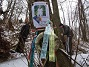
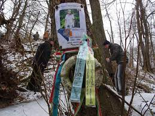
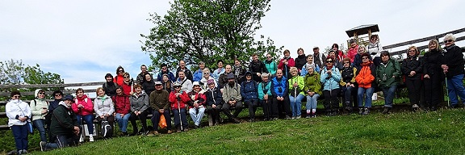
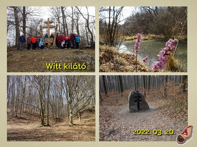

© 2012-2022 BAKANCSOS EGYÉNI TERMÉSZETJÁRÓK 1989

Túrával emlékeznek Gáti Lászlóra a pápai bakancsosok

Január végén a Jókai Mór Művelődési és Szabadidő Központ Bakancsos Természetjárói immár hetedik alkalommal zarándokoltak el a Gáti-vízeséshez, mely a csoport számára kegyhely, szentély. Ennél a természet alkotta tüneményes helynél tartják meg hagyományosan a Bakancsos Természetjárók napját, emlékezve Gáti László (1926-2009) tájfutóra, sportszervezőre.
Gáti László
Egyesületünk

A "Bakancsos Egyéni Természetjárók 1989" tagjainak sorában gyermekek, felnőttek és nyugdíjasok is megtalálhatók. A kirándulások nem versenysport jelleggel szerveződnek.
Célunk a szabadidő hasznos eltöltése, séta a tiszta levegőjű erdőkben. Aktív testmozgás mellett az erdők, rétek csendjét és madárcsicsergését hallgatva a lélek is feltöltődik, tüdőnk is megtisztul.
Fő úticélunk a Bakony, mely sok csodát rejt és minden évszakban más arcát mutatja. Kirándulásaink nyilvánosak, melyekre szeretettel várunk minden érdeklődőt!
Egyesületünk
Kirándulás

További érdekességek
MYRAFALLE VÍZESÉS-STEINWANDKLAMM SZURDOK
- kirándulás a bécsi alpok legszebb kiránduló helyeire -
Zolis